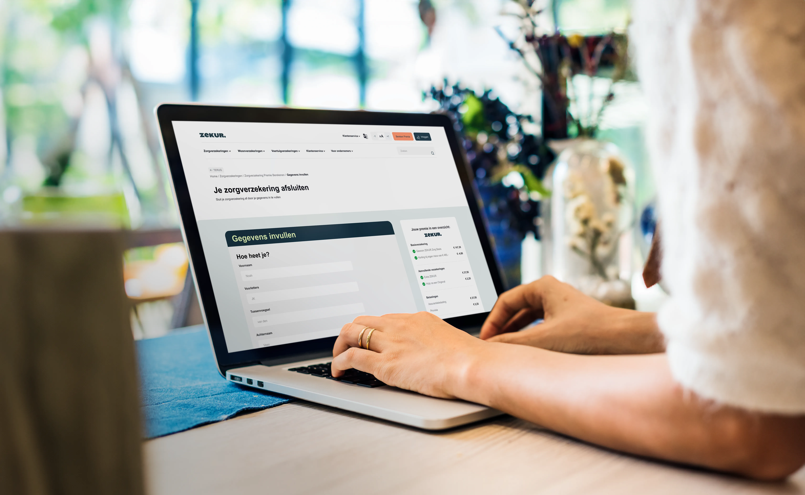

After we finished the UI/UX research, figma design and Figma prototype, we coded the website in HTML, CSS, and JavaScript.
We made many interactive elements with CSS and JavaScript. Think of a sticky navigation bar, translate button, change font size buttons, an interactive receipt, and more.
For the ZERKUR. redesign, I made a feature to change the font size. This improves the accessibility on the website. For example, older people can now increase the font-size to their liking. I made this feature with JavaScript. I made sure everything on the websites uses the same P, h1, h2, h3, a, button tags, so the JavaScript can easily change it.
For a better user experience, I made a sticky receipt feature. This receipt shows your current selected insurance, the price of each, and the total. It is always sticky to the top of your screen, so you always see it.